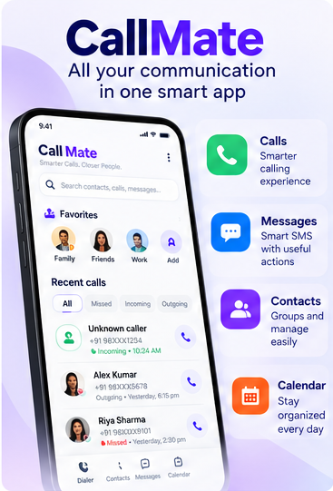
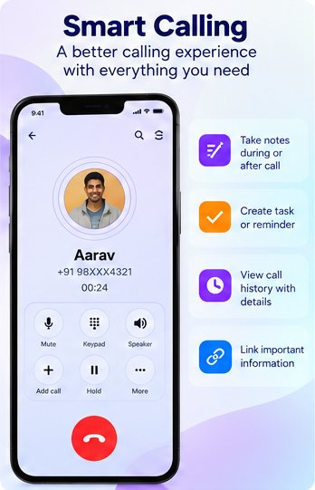
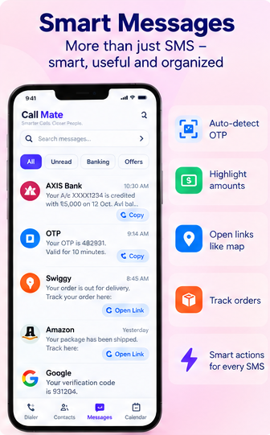
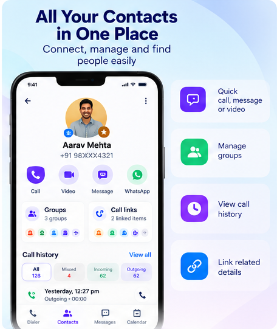
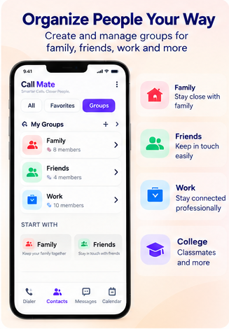
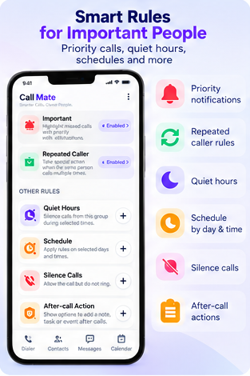
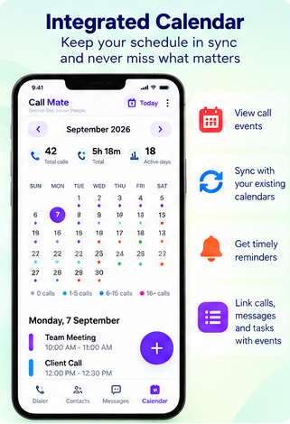
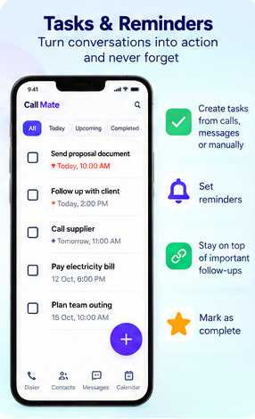
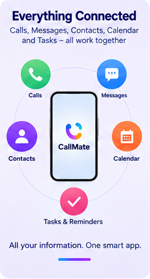

Calls, messages & contacts
Find contacts, understand recent activity, initiate calls, and manage supported messaging workflows.
SmartDialer brings calls, messages, contacts, reminders, tasks, and calendar activity into a more organized everyday experience while keeping privacy at the center.
Explore the core communication, organization, and follow-up experiences across SmartDialer.
Product note: These screens were created while the application used its former CallMate name. The product now continues as SmartDialer.









1 of 9
SmartDialer connects common phone workflows with the context and follow-up actions that come next.
Find contacts, understand recent activity, initiate calls, and manage supported messaging workflows.
Connect conversations with reminders, notes, tasks, conferences, and calendar events.
Use Android permissions and default roles only for the functionality the user chooses to enable.
SmartDialer is designed primarily to work with information available on your Android device. Contacts, call history, messages, and calendar information are processed locally for application functionality.